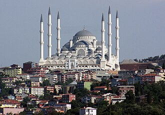

PrésentationتقديمOverview
La mosquée de Çamlıca est une mosquée située dans le quartier d'Üsküdar, sur la rive asiatique d'Istanbul, au sommet de la colline éponyme qui est l'une des plus hautes de la ville. Elle a été inaugurée le 3 mai 2019, en présence du président Recep Tayyip Erdoğan.
جامع جامليجة ، يقع في منطقة أسكدار باسطنبول. هو أكبر مسجد في آسيا الصغرى. بدأ البناء في 29 مارس 2013م مع أعمال الحفر وافتُتح يوم 1 يوليو 2016م. بدأت جمهورية تركيا مشروع بناء أكبر مسجد في تاريخها، مع ملحقاته على مساحة 15000 م2، ويتكون من 10 مبانٍ مغلقة بسعة 37500 آلاف شخص مصلٍ و5 أماكن مفتوحة في فناء المسجد ومجموع مآذنه 6 مآذن.
The Grand Çamlıca Mosque is a landmark complex for Islamic worship which was completed and opened on 7 March 2019. The mosque stands astride Çamlıca Hill in the Üsküdar district of Istanbul and is visible from much of the centre of the city. The complex incorporates an art gallery, library, and conference hall. It can hold up to 63,000 worshippers at a time.
Çamlıca Camii, Türkiye'nin İstanbul şehrinde yer alan bir camidir. Çamlıca, Üsküdar'da yapımına 29 Mart 2013'te başlanan ve 3 Mayıs 2019'da açılışı yapılan cami, cumhuriyet tarihinin en büyük camisidir. 63 bin kişi kapasiteli ve 6 minareli cami 57 bin 500 metrekarelik alana sahiptir. Cami külliyesinde aynı zamanda müze, sanat galerisi, kütüphane, bin kişilik konferans salonu, 8 sanat atölyesi ve 3 bin 500 araçlık otopark bulunmaktadır.
Masjid Çamlıca atau lebih dikenal dengan Masjid Raya Çamlıca adalah sebuah kompleks masjid terbesar yang berada di distrik Üsküdar, Provinsi Istanbul, Turki. Kompleks masjid ini dibangun pada tahun 2013 di atas Bukit Çamlıca, yang dibangun dengan menggabungkan galeri seni, perpustakaan, dan ruang konferensi. Masjid ini merupakan salah satu dari dua masjid yang memiliki 6 minaret, dua diantaranya ialah Masjid Sultan Ahmed dan Masjid Sabancı Merkez.
چاملیجا مسجد ایک اسلامی عبادت گاہ ہے جو مارچ 2019 میں مکمل اور کھولی گئی تھی۔ یہ مسجد استنبول میں اسکودار میں واقع ہے اور ایک آرٹ گیلری، لائبریری اور ایک کانفرنس ہال کی نمائش کرتی ہے۔ مسجد کی لاگت 110 ملین امریکی ڈالر تھی جو ترک حکومت کی طرف سے میگا پروجیکٹ منصوبے میں سرمایہ کاری تھی۔
Die Çamlıca-Moschee steht weithin sichtbar auf einer Hügelkuppe im Stadtviertel Üsküdar-Çamlıca auf der asiatischen Seite der türkischen Metropole Istanbul. Sie fasst 63.000 Gläubige und gilt damit als die größte Moschee des Landes.
La mezquita de Çamlıca en Estambul, Turquía, es la mezquita más grande de Asia Menor y se inauguró el 1 de julio de 2016. Tiene capacidad para reunir a 37.500 fieles, y el complejo incluye un museo, una galería de arte, una biblioteca, una sala de conferencias y un estacionamiento subterráneo.
強穆勒佳清真寺 是一座位於伊斯坦堡的清真寺，同時也是土耳其最大的清真寺。該清真寺可容纳63,000人，其中包括博物館、美術館、圖書館、會議廳和可容纳3500輛車的地下停車場。
Çamlıcamoskén i distriktet Üsküdar i Istanbul är Turkiets största moské. Den har plats för upp till 63 000 bedjande och kan skydda upp till 100 000 människor vid en eventuell jordbävning. I anslutning till moskén finns ett museum, ett galleri, ett bibliotek samt konferenslokaler.
Moscheea Çamlıca este o moschee din Istanbul, Turcia. Situată pe o colină din zona Üsküdar, aceasta este cea mai nouă dintre marile moschei din oraș, depășindu-le ca dimensiune pe cele din perioada clasică otomană, inclusiv Hagia Sophia Numele de Çamlıca dat moscheii vine de la colina respectivă, cuvântul turcesc çam însemnând pin.
Sur la carteعلى الخريطةOn the map
Documents et liensوثائق وروابطDocuments and links
- Wikipédia — Français
- Wikipédia — العربية
- Wikipédia — English
- Wikipédia — Türkçe
- Wikipédia — Bahasa Indonesia
- Wikipédia — اردو
- Wikipédia — Deutsch
- Wikipédia — Español
- Wikipédia — 中文
- Wikipédia — Svenska
- Wikipédia — Română
- Wikidata — Q18341384
Données : Wikidata (CC0), mises à jour tous les 3 mois. L'année est la plus ancienne date de construction connue du bâtiment : pour un édifice devenu mosquée plus tard (comme Sainte-Sophie), c'est celle du bâtiment d'origine. Photos : Wikimedia Commons, auteur et licence sur la page de chaque photo.البيانات: ويكي بيانات (CC0)، تُحدَّث كل 3 أشهر. السنة هي أقدم تاريخ معروف لبناء المبنى: فإن صار مسجدًا لاحقًا (مثل آيا صوفيا) فهي سنة المبنى الأصلي. الصور: ويكيميديا كومنز، المؤلف والرخصة في صفحة كل صورة.Data: Wikidata (CC0), updated every 3 months. The year is the earliest known construction date of the building: for a building that became a mosque later (such as Hagia Sophia), it is that of the original building. Photos: Wikimedia Commons, author and licence on each photo's page.
Grandes mosquées du mondeالجوامع الكبرى في العالمGreat mosques of the world →